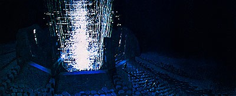
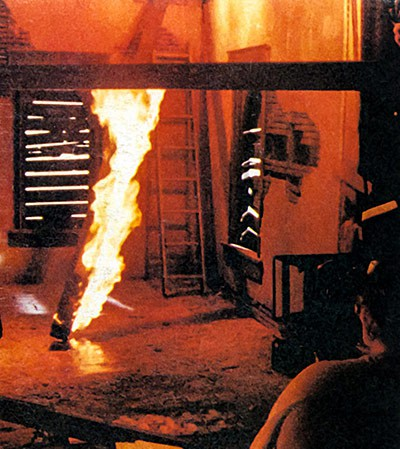

SPECIAL VISUAL EFFECTS
ROBERT SWARTHE
Animator, effects supervisor, writer, director... Finding a comfortable pigeonhole for Robert Swarthe is no small task. A talented and versatile innovator, Swarthe has lent his largely under-recognized talents to some of the more distinctive special effects productions of the last half-decade. Although it was a 1975 Academy Award-nominated short subject, Kick Me, which brought Swarthe his first real flurry of public recognition, the young filmmaker was by no means a cinematic novice at the time. A decade before, he had earned both undergraduate and graduate degrees in film at the University of California — Los Angeles. His first professional film job — while he was still in graduate school — was with Graphic Films in Hollywood. Graphic Films was heavily involved in producing spaceflight animation for NASA and other aerospace clients, and Swarthe worked side by side with a number of future special effects heavyweights — including Douglas Trumbull and Con Pederson, who during Swarthe’s brief tenure with the company were spirited away by Stanley Kubrick to supervise the landmark effects work on 2001: A Space Odyssey. After completing his graduate studies, Swarthe joined The Haboush Company as a staff director of animated and live-action commercials — a five-year stint interrupted by an eighteen-month tour in the Navy where he worked in various capacities on a number of Vietnam-era public relations films.
Earlier, while still at Haboush, Swarthe and fellow animation director Bob Mitchell had begun an animated short called Moon Movie, involving a small dog kidnapped by lunar cats. The eight-minute film was unfinished when Swarthe left for the Navy. Mitchell, meanwhile, went off to London where he created many of the characters for Yellow Submarine, Later reunited, both men returned to their Moon Movie project, and in the wake of the recently released 2001, updated the story with some parodic references, altered the title to K-9000: A Space Oddity, and completed the film in 1969. Ultimately, Swarthe left Haboush to direct commercials on a freelance basis. A couple years later, he wrote, directed and co-produced with John Mayer a twenty-minute live-action spoof of the vintage Republic-style serials, which also involved a variety of special effects techniques. Like its animated predecessor, Radio Rocket Boy, was largely a labor of love that saw little in the way of financial reward.
Kick Me was Swarthe’s third major short subject. Ingeniously conceived and flawlessly executed, the cleverly animated film was drawn not on conventional cels, but directly on motion picture film, involving a variation of a technique he had first employed in his student days at UCLA.
“The idea did not originate with me,” Swarthe explained. “Norman McLaren made a whole series of films using the technique at the National Film Board of Canada in the Forties and Fifties — and he wasn’t the first either. McLaren called it camera-less animation; and it fascinated me, I’m sure, for the same reason it did him. You could sit there by yourself and just do it — without a whole lot of people and expensive equipment. When I was in high school, I did some drawing and scratching on 8mm film; and then when I got to UCLA, I began drawing with black India ink on clear 16mm film. From these, I had hi-con positive and negative prints made, which I hand-colored with different kinds of magic markers and colored inks. My final UCLA workshop film — The Unicycle Race — was much more complicated. My main idea on that one was to tell sort of a traditional cartoon chase-type story, using very simple characters and this drawing-on-film technique, which has kind of a quivering effect which I rather like. It took me two solid weeks, working fourteen hours a day, to do all the drawing. The Unicycle Race was drawn in black ink on clear 65mm film; and from that, Deluxe Labs made me a reduction 35mm squeezed negative from which I could do all the rest of the production steps. When I got the print back from Deluxe, I had to go through with blooping ink and dot out all the dirt spots — which took forever. In fact, I think it took longer to do that than it did to draw the whole film; but I didn’t want to risk having the lab try to clean the original film for fear the India ink might come off. It was my intent at first to do the coloring by hand; but after about a foot of it, I realized that hand-coloring ten thousand frames of 35mm film would take forever, and it would be just awful. Fortunately, by that time I had already been involved with Graphic Films and I had seen some wonderfully complicated animation sequences being done with bipack mattes. As it turned out, Jim Dickson, who worked there, had just bought an Oxberry animation stand to set up business on his own, and he let me use it whenever it was free — for which he charged me nothing. As a result, I was able to bipack hi-con positives and negatives of the material I had hand-drawn, and put the color in on his animation stand using color cards. I estimated that it took about eighty hours of camera time in all. “The Unicycle Race is an okay film, but during the next ten years I’d had a lot of time to think about ways of doing it better. One of the problems with The Unicycle Race was that by doing it on 65mm, I had to draw the entire film without being able to see what any of the animation looked like until I had it reduced to 35mm and made a print — so there was no going back to improve sections I didn’t like. Unfortunately, there was no alternative, because I had no projection or viewing equipment for 65mm. So when I decided to make Kick Me, I wanted to keep to 35mm. Also, I wasn’t looking forward to drawing with India ink and having that awful cleanup problem again. Instead, Kick Me was designed to employ a whole other technique which would make the drawing flexible and much easier. This process depended entirely upon the fact that the film was going to be composited on an optical printer. Basically, it was like doing hand-drawn bluescreen. First I had one hundred feet of a field chart — with a blue gel over it — shot on an animation stand. Then I had the lab make a number of prints that I could draw on. Eastman color print stock has a very soft emulsion, so with a scribe you can scratch designs into it easily and end up with little clear lines. From there, I could take the film to an optical house and have them print it onto hi-con stock through a red filter. The red filter blocks out the blue color; it blocks out the little black lines in the field chart; it blocks out all the dirt on the film. The only thing that prints through is the red light shining through the clear hand-drawn areas. The advantage to that was that I could draw on the blue film and then put it on the Moviola and look at the animation. If I didn’t like part of it, I could cut it out with an ordinary tape splicer and replace it with new drawings. And it didn’t matter if I accidentally scratched the film in the Moviola, because all I’d have to do is paint out the flaws with black blooping ink. So what that technique gave me was absolute freedom in drawing the film, and that’s why there’s not a wasted second in the whole thing. It just goes like a house afire.
One of Robert Swarthe’s early film projects was Radio
Rocket Boy,
a comedic short subject styled after the old Republic serials. A flying saucer landing was achieved by pasting a still photo of the whimsical model onto an animation cel and masking around it.
A corresponding hand-inked silhouette was then aligned with the live-action plate via rotoscoping.
Swarthe prepares to rephotograph the live-action background. The black silhouette holds back exposure in the saucer area, while the white surrounding it serves as a printing light for the bipacked live-action. The saucer itself was then printed into the unexposed area on a separate pass.
In the final composite, saucer moves could be achieved by carefully repositioning the animation bed or camera.
Swarthe received an Academy Award nomination for Kick Me,
an animated short hand-drawn on individual frames of 35mm film. The setup employed by Swarthe to suggest a pencil entering the frame to “draw” the first of the stick-figure characters.
Each different color had to be scribed onto a separate piece of film and composited optically.
“Everything that was a different color had to be on a different piece of film. The character would be drawn on one piece of film, and the background on another piece. There’s a baseball that had dark brown stitching on a lighter brown center, so I’d have to make a white dot for the ball and then do the stitching on a separate piece of film. I would register things by drawing little layouts on tracing paper and scotch-taping them underneath the film. That way, I could make tiny registration dots on the paper where the feet should land, and then draw in the little stick figure on the film. So everything was broken down into elements and composited optically using exactly the same techniques you’d use for putting together any science fiction spaceship shot.”
In addition to the basic animation compositing, Swarthe included an opening shot to help establish the fact that the images are being drawn directly on film — a complex composite rephotographed on the animation stand with the camera drawn far enough back to see the entire strip of film, sprocket holes included, as a pencil enters the frame and makes the first drawing. Later, the camera draws back again as the characters jump off the film and scramble from frame to frame. A virtuoso production from start to finish, the eight-minute film took Swarthe nearly a year to complete — including some six months worth of part-time optical work — and was subsequently honored with an Oscar nomination for best animated short subject.
Later that same year, Douglas Trumbull was to reenter Swarthe’s life. Visual effects for Close Encounters of the Third Kind were getting underway at future General, and Trumbull’s long-time colleague and director of effects photography for the film, Richard Yuricich, telephoned Bob Swarthe and said they were looking for someone to supervise the animation department. “It was kind of a mysterious phone call,” Swarthe recalled. “The kid who directed Jaws was doing this big science fiction picture with lots of effects — and this, of course, was during that long dry spell when nobody was doing science fiction special effects films. I figured only the director of Jaws could get away with this, and that rather than be a big fish in a small pond making commercials, I’d take time out to be a little fish in features and get in on this thing. I figured, ‘After all, probably nobody’s ever going to do one of these again.’ “
Since the effects in Close Encounters of the Third Kind had to work in the context of Steven Spielberg’s down-to-earth real-world settings, the animation was — of necessity — extremely subtle and carefully integrated. “We tried dozens of ideas using animation to create realistic effects,” Swarthe admitted, “but most of them failed because the artwork animation did not look realistic combined with live-action scenes. Actually, there are only two scenes in the whole movie where the primary effect is animation. One is the scene where Jillian and Roy get to the base camp and they look up in the sky and see the Big Dipper forming. Those little stars were shot on our Oxberry. The other one was earlier, when a meteor flies over Devil’s Tower, coasts to a stop, and splits into four little lights which all move off into space. Both effects set the stage for the barnstorming sequence that follows. We used no frame-by-frame drawings for any of this. It was all backlit artwork involving bed moves on the animation stand. The Oxberry has a number of cranks on it which make the bed — which is your table top or working surface — move. And there are numerical counters on each for determining accurate degrees of movement. You can move the bed north and south, which would be up and down on the screen; or east and west, which would be left and right. Or you can rotate it a full 360 degrees. Each of the seven stars in the Big Dipper required a separate pass. We’d find a start position and a stop position for each star. Then we’d calibrate our moves by figuring out how long we wanted them to take to get from start to stop, and where we wanted them to slow down or speed up. By moving the bed according to our calculations, we created each of those individual light movements a frame at a time — all on the same piece of film. It was really kind of old-fashioned animation camera planning. After we shot our animation, it was optically combined with the top of the mountain, which in this case was a retouched still photograph that we shot on the animation stand. Once they were combined in the optical department, we got the scene back and burned in all the rest of the fixed stars onto the latent inter-positive.”
As animation supervisor for Close Encounters of the Third Kind,
Swarthe oversaw the subtle and tedious insertion of pinpoint stars into nearly all of the film’s many effects shots.
The animation department played a more prominent role in the creation of the dazzling mothership underbelly for the Devil’s Tower landing sequence.
Intricate pie-shaped radial dot patterns drawn by Harry Moreau were replicated and pasted up into circular forms which were then transferred to high-contrast kodalith film and projected on a large dome corresponding in shape to the underbelly. By rotating one film disk over another, shifting moire patterns could be achieved. Each color required a separate in-camera pass.
Swarthe prepares cutout artwork for another sequence in the film.
It was the fixed stars, in fact, that presented the animation department with its most prodigious workload. “The stars in Close Encounters are nearly always seen in relation to real earth backgrounds — and if they were too big, or too bright, they’d look phony. So my main preoccupation was trying to make the stars as tiny as possible; but there’s a limit to what you can do, because the film can’t resolve them at the size they really ought to be. I had some tests that looked very nice in 70mm, but they wouldn’t hold up under reduction to 35mm and all the other steps you have to go through to make the final film. So we ended up burning them in directly onto the final optical internegative — after the live-action, and Dave Stewart’s UFOs and the matte paintings were printed. If they had gone through optical, most of our bright pinpoint stars would have disappeared. But the internegative stock is not designed to be used on an animation stand. It’s designed to be run through a printer. So its sensitivity to light is extremely low. As a result, we ended up with some incredibly long exposure times. We had eight thousand watts of light blasting down onto these stars — which were carefully air-brushed splatters of white paint on a black card — and our exposure times would still range from a low of about fifteen seconds up to a minute per frame. So it was incredibly hot and blindingly bright in there. We had crews working twenty-four hours a day shooting these things, because it might take eight hours to put the stars onto an average ten-second scene. And there were a helluva lot of star scenes.
To suggest a wormhole distortion of the time-space continuum for Star Trek -
The Motion Picture,
Swarthe decided to selectively streak the live-action footage photographed on the Enterprise
bridge. Individual hand-drawn rotoscope mattes were first needed to isolate the areas to be streaked — primarily faces and light sources. These mattes were then projected, in bipack with the original live-action, onto a rear projection screen linked to a motion control system. By carefully plotting and programming moves for the screen and accompanying camera, the matte-isolated area of the frame could be streaked in any desired manner. Once all the streaks had been separately generated and photographed, they were superimposed back in over the original live-action.
To suggest a wormhole distortion of the time-space continuum for Star Trek -
The Motion Picture,
Swarthe decided to selectively streak the live-action footage photographed on the Enterprise
bridge. Individual hand-drawn rotoscope mattes were first needed to isolate the areas to be streaked — primarily faces and light sources. These mattes were then projected, in bipack with the original live-action, onto a rear projection screen linked to a motion control system. By carefully plotting and programming moves for the screen and accompanying camera, the matte-isolated area of the frame could be streaked in any desired manner. Once all the streaks had been separately generated and photographed, they were superimposed back in over the original live-action.
“The least creative aspect of our work was the rotoscoping. I set it up so we could make still photo enlargements directly off of either workprint clips or pieces of test negative from the optical department. We used them extensively to plan where stars should go. Once we traced the basic outlines in the scene, we could make up a star background for it. Then we had to make hand-drawn roto-mattes to hold out the stars where people or objects had to go in front of them. Otherwise, the stars would double-expose through. We’d have a couple of artists sitting all day, just tracing outlines of people and moving objects onto cels and painting them in black. Originally, we had to photograph the stars on the animation stand by physically changing holdout cels between each frame of exposure. Alan Harding and Max Morgan did ninety percent of the Oxberry shooting and they’d have to put the cel down, push the button, wait sixty seconds or so for the exposure to finish, take the cel off, and put the next one on. It was very tedious and it took an incredible amount of patience. When we got into a real production bind, we set up a Panavision reflex camera for stop-motion and built a temporary stand out of pipes so we could mount the camera in a fixed position relative to a flat bed. We were able to put a lot of stars into scenes using that setup, and at the same time, free the Oxberry to do some of the more elaborate things.”
Some of the more elaborate things included moving pinpoint light sources, designed to represent distant helicopters in flight, as well as a variety of shooting stars and other unspecified light phenomena which flit through the Indiana Night Skies. Bob Swarthe’s animation department was also to play a major role in the climactic enactment of the alien mothership’s wondrous appearance at the Devil’s Tower landing site. The concept, which had been developed by Spielberg and Trumbull, called for the dome-shaped underbelly of the massive spacecraft to be ablaze with a shimmering multicolored array of shifting lights.
“All of the light patterns on the underbelly were actually projections of radial dot patterns. Doug made up a basic guide for the type of thing he wanted. The primary modification we made was to make the dots incredibly small. Because it’s so difficult to make tiny points of light look really tiny on motion picture film, I had Harry Moreau, my key artist and animator, draw a section of dots on a card that was actually larger than the model surface it was going to be projected on — about four or five feet in diameter. He did a thirty-degree pie-shaped section, and then we made twelve copies of that and pasted them into a circle, which was reduced to an 8x10 film negative. When the dots were projected onto the underbelly, they were still a little bit smaller than the original artwork; and I think the size was perfect, because it really made the ship look gigantic.” Harry Moreau ultimately produced three of the multi-dotted circular patterns, which were subsequently converted to 8x10 kodaliths, mounted in pyrex glass, and projected onto the underbelly miniature in sandwiched pairs by means of a motorized system which allowed one slide to be rotated while the second remained fixed. The result was a moving moire pattern which created the effect of thousands upon thousands of tiny lights going on and off and moving. The footage was painstakingly photographed by effects cameraman Dennis Muren and assistant Scott Squires, with each of the colors — usually two or three per shot — requiring a separate light pass.
“We also did a number of other supportive things to enhance the mothership footage,” Swarthe elaborated. “During the musical duel sequence, all of the colored light effects emanating from the mothership that were synched to music were done on the animation stand. It was backlit artwork, and we devised a little cardboard slot gizmo that we could open and close by dialing it to different numbers. All the movements had to be synchronized to music, so I went over it all with our effects editor Larry Robinson and we synched our effects to the music track they had used on the set when they photographed the live-action. One of our main problems was making the animation fit into the scene realistically so it didn’t look matted over. We ended up putting in all sorts of fog filters and things over the lens to try and fuzz up our animation line so it would look about the same as the live-action — not that the live-action was fuzzy, but it is compared to animation, which would normally be a hard, crisp line. Also during the musical duel, there were a couple of scenes where Doug wanted the effect of thousands of little bright explosions, which he called ‘solar explosions,’ all over the surface of the mother-ship. For those, we used a high intensity slide projector light pointed directly into the camera lens through little holes drilled in metal. The holes were .045 inches in diameter, so a lot of the light got cut out; but it was still so bright you couldn’t look at it too long through the camera lens without getting a headache. Like the stars, these explosions were shot on the latent internegative stock, so we’d have to go to ninety-second exposures to get the flares we wanted. Doug wanted the explosions to flash on bright and then fade; so we’d pop them on in sixteen frames and fade them off in thirty-two. The exposure would start off at f/22, and then open up a full two stops per frame until we were wide open; then we’d have to start doubling the exposure time, way up to about ninety-six seconds per frame. That’s how much light it took.”
After a year-and-a-half on Close Encounters, Bob Swarthe took a year-long sabbatical from film work before being lured back into the world of effects on Star Trek — The Motion Picture. Robert Abel — another coworker from Swarthe’s Graphic films days — was then in charge of the project, and though Swarthe was reluctant to assume another long-term effects assignment, Abel convinced him to take on the interior wormhole sequence in which an antimatter imbalance in the Enterprise’s untested engines throws the ship into a spiraling vortex of light and color. “I agreed to do the sequence because it was in 35mm and all of the live-action footage had already been shot. Everything else was in 65mm and they didn’t have their 65mm up and running yet. But the equipment we were going to do the wormhole on was the same stuff they used all the time on their commercials, so it was all sitting there. I had never worked directly with computer-controlled cameras, and so I thought: ‘Okay, this is good; I’ll play with the toys.’ And I agreed to give them three months.”
For Decker’s climactic mergence with V’ger, Swarthe’s animation unit designed and photographed a shimmering moire pattern transcendence effect which first sweeps up over actor Stephen Collins, then transforms into a brilliant column of light which rotates and expands outward to engulf the entire site. Rotoscope mattes served to hold out pillar areas and place the seemingly three-dimensional — though strictly flat-art —
animation effect squarely within the live-action setting, which in longer views was augmented by matte paintings.

For Decker’s climactic mergence with V’ger, Swarthe’s animation unit designed and photographed a shimmering moire pattern transcendence effect which first sweeps up over actor Stephen Collins, then transforms into a brilliant column of light which rotates and expands outward to engulf the entire site. Rotoscope mattes served to hold out pillar areas and place the seemingly three-dimensional — though strictly flat-art —
animation effect squarely within the live-action setting, which in longer views was augmented by matte paintings.
The basic concept for the sequence was that the live-action photography on the Enterprise bridge would be streaked in such a way as to suggest an ongoing distortion of the time-space continuum. Software expert Don Miskowich was given the task of devising the necessary computer programs. Since streak photography was a commercial forte of the Abel organization, Miskowich was able to begin with an existing system designed to operate a camera and a rear projector under motion control. As configured, the camera, mounted on rails, could move toward or away from the rear projection screen in a straight line. The rear projection screen, in turn, was motorized to move north-south and east-west. By carefully plotting the three axes of movement, an apparent curved line could be created in small, straight-line segments. A software program was written to achieve such moves under motion control and a test sequence was shot. A print of the 35mm stage photography was rear-projected onto the screen one frame at a time. For each frame, the camera shutter would remain open as the camera and screen were moved in predetermined patterns which tended to smear the images being photographed from the screen. By manipulating all three axes of movement simultaneously and in sequence, and by advancing the move incrementally from frame to frame, the live-action stage photography would appear to streak in nonlinear patterns when projected. The test results were encouraging, but director Robert Wise was somewhat concerned that the lack of definition inherent in wholesale streaking of the sequence would make it difficult to follow both the action and dialogue. At this point, Bob Swarthe was brought in as project director.
“My thought was to simplify the sequence visually,” Swarthe explained, “which made it easier to see on the screen, but a lot more difficult to do.” Swarthe felt that by streaking individual elements in each frame independently, rather than the whole frame at once, the interior wormhole effect could more closely reflect the vortex that would be generated for the exterior shots, and would also help the shots retain some of the definition that had been lost in the previous tests. What this entailed, however, was a monumental amount of additional work. “The first thing we had to do for each scene was determine what portions of the frame we wanted streaked. Normally, this included highlighted portions of the actors’ faces and uniforms, as well as any small, bright light sources in the set itself. Then, since the streaks needed to vary in size and direction depending on their location in the scene, we had to isolate each subject we were streaking. This we did by projecting the live-action footage a frame at a time onto a rotoscope table and having a team of artists ink in animation cels, leaving clear windows around whatever we wanted streaked. We had to do one of these rotoscope masks for every frame in the cut, and a separate series of masks for each streak. So a simple forty- or fifty-frame cut could easily run into several hundred hand-drawn roto-mattes. When these were projected onto our RP screen along with the original photography, all that would show through would be whatever we wanted to be streaking at the time.”
While the laborious matting process was underway, Swarthe would decide what he wanted each streak to look like. Streaks on foreground subjects were generally longer than on background subjects, and all streaks were designed to flow toward an imaginary vanishing point which corresponded roughly with the stern of the ship and away from the source of the wormhole distortion. Once a general determination as to length and direction was made, Swarthe would go over his concept with Don Miskowich who was in charge of programming the camera system to achieve the desired moves — which, in itself, took many hours. Even then, the average streak element required an hour to an hour-and-a-half just to shoot. With multiple elements and comprehensive wedge-testing, each cut in the wormhole sequence consumed anywhere from fifteen to twenty hours of camera time.
“Originally, the idea was to composite everything on the RP screen,” Swarthe asserted, “but doing that meant that if you blew even one streak, you’d have to remake everything. And frankly, the chances for something screwing up were monumental. So I decided we’d be better off shooting them all as separate elements. That way, we could shoot the streak and then look at the daily print — which was just that one streak against black. If it looked okay, great; if it didn’t, at least we didn’t have to go back and reshoot all the other streaks, too. Then, after we got everything right, all we’d have to do would be to set up the camera and the rear projector and run each completed element through at the right exposure and put the whole thing together. As it turns out, though, we didn’t do it that way, because part way through I realized that we were just never going to get adequate quality by compositing on the RP screen. The RP was fine for doing the streaks, but copying the live-action on it looked awful. So we finally ended up taking all the pieces and running them through optical printing.”
The striated nature of the undulating light streaks was a fortunate happenstance resulting from the primitive nature of the particular motion control system being used. “Each one of the curves is actually made up of little straight-line segments,” Swarthe explained, “and the reason we got little bright spots was because there’s a moment’s hesitation every time the system has to change direction. The motion control system operated from commands that were recorded on paper punch tape, and it took just a split second to read the new command in. But during that time, the exposure continued to accumulate on the frame, and so we got these little hot spots burned into the streak.”
Fortunately, the principal photography had been staged so that most of the streaks did not obstruct the actors’ faces when dialogue was being delivered. However, since a majority of the setups required that the streak travel from front to back, this presented a problem with lights mounted on the rear walls. The lights, clearly, could not streak into the wall, so these streaks were designed to begin in space and stream toward the source — opposite from the other streaks, but flowing in the same direction. In a few cases, the streaks were begun in front of a foreground source, and then continued on through, trailing off behind. After the main subjects were smeared, many shots were further enhanced by streaks emanating from off-camera sources — some real and some imaginary. “We used artwork rather than film images for these fake streaks,” said Swarthe. “They were photographed on an Oxberry animation stand which had a whole bunch of servo motors under computer control. It really made beautiful streaks. In fact, on the Oxberry streaks, there are no striations like we got with the other rig, because the servo control system made everything very smooth.”
Bob Swarthe served as visual effects supervisor for the revised and expanded Close Encounters — Special Edition.
Most of the effects effort went into the final sequence in which Roy Neary beholds the interior of the wondrous mothership. With the exception of a couple of recognizably close shots of Richard Dreyfuss, the entire sequence was devised around miniatures and opticals. The “roundhouse,” which Neary first enters, was an eight-foot diameter miniature with articulated spotlights, an elevating ceiling, and a six-inch-tall remote-control puppet meant to represent the diminutive Neary.
Once the ceiling lifts, a much larger chamber was revealed. Fifteen feet tall and twelve feet wide, the intricately detailed mothership interior was outfitted with thousands of tiny light sources. UFOs were shot as separate elements and inserted optically.
To further complicate an already complex procedure, many of the streaks were designed to flow behind one or more of the actors. In such cases, each frame in the shot would be projected onto the rotoscope stand and a silhouette of the actor hand-inked on animation cels. These would then be photographed in sequence to produce a traveling matte which, in the optical compositing stage, would hold out the actor’s image and therefore make the light streaks appear to be flowing behind him.
After three months of intensive effort, five completed shots were submitted to Robert Wise for approval. Assured now that the effect would play, Wise directed Swarthe and his team to proceed. In all, forty-eight scenes were laboriously transformed, a process which took twenty-five artists, cameramen and technical directors working double shifts more than seven months to complete. Ultimately, when Robert Abel was ousted and the production turned over to Douglas Trumbull, it was agreed that the wormhole unit would remain behind and finish up on Abel’s already-existing equipment. “We had the whole place to ourselves for about two-and-a-half months,” Swarthe recalled. “All together, I’d estimate we shot about a thousand separate elements, not including the wedge tests; and each was on a separate piece of film.” At this point, Swarthe’s animation effects editor, Kathryn Campbell, who had maintained meticulous records on every shot, set about organizing the material so it could be turned over to The Optical House, an independent effects firm, where the various streak elements would be superimposed over the stage photography for a final composite. Months later, the wormhole interiors were still being fine-tuned, and it was not until the closing weeks of postproduction that the sequence was finally completed. Had it not been started during the Abel regime, expedience would most certainly have demanded a far simpler technique, and one of the more interesting and innovative sequences in the picture would have been forfeited.
Even though he had already exceeded his initial commitment to Star Trek by many months, Swarthe recognized the problems Douglas Trumbull was facing in agreeing to churn out all the remaining effects sequences in only nine months. As a result, he allowed himself to be persuaded to take on the climactic transcendence sequence in which Decker and Ilia merge spiritually with V’ger. “The wormhole sequence involved all these computerized systems,” Swarthe said. “It was very complicated; it took forever to do; and it was very expensive. In contrast, the transcendence was done entirely on the same Oxberry camera setup we had used on Close Encounters, and by choice it was all done by turning knobs manually or with little motors and variacs and so on. It was the most primitive approach possible; and I’ve been very proud that with the wormhole I did some of the most expensive animation, and with the transcendence, some of the cheapest — all in the same film. And both stand equally on their own. Neither of them are concessions to money, or anything like that.”
Swarthe, who clearly takes pleasure in creating grand illusions by the simplest possible means, further delights in rejecting the technocrat’s tendency to enshroud his techniques with obtuse terminology. Some of the most dramatic animation in Star Trek was derived from the use of what he calls “slot gags” — a remarkably uncomplicated means of moving two pieces of backlit artwork in relation to each other, usually with pieces of cutout cardboard serving as makeshift tracks and pulleys. Equally straightforward is the “pivot gimmick” — a simple device derived from punching tiny holes in two pieces of artwork, inserting small grommets, and then connecting the two with a miniature rivet to allow rotation of the pieces. “You can do essentially the same thing with a thumbtack,” Swarthe added. “In fact, there’s a lot of thumbtack stuff in Close Encounters. Nothing pleases me more than to use scotch tape and string and thumbtacks and paper clips — and that is literally what’s happening in Star Trek during the transcendence. In the original photography, the only thing that happens is this kind of ripply light effect which was built into the set. But when the floor starts to light up and scintillate, and the transcendence effect forms and begins to expand, that’s all animation. We had something like seven layers of backlit animation; and in order for it to expand, our Oxberry camera had to track in on it with an off-center move. Then we had a stationary matte that went into the printer so the effect would appear to go behind the foreground columns. It was a very difficult composite. The effect was rotating and expanding outward, and it really had a three-dimensional look to it — but it was all flat artwork. It was incredibly gratifying for me to finally be able to do an animation effect that could be put into a live-action film, and work.”
As Star Trek progressed, Swarthe’s duties were expanded beyond the realm of his two specific sequences to outright supervision of all the animation effects, which included numerous lightning bolts, viewscreen readouts and generation of the V’ger cloud plates. Then, to tie in the exterior and interior wormhole footage, he further supervised a few last-minute model shots in which the Enterprise was mounted on Trumbull’s motion control Compsy unit and streaked through the frame. When necessary, he also coordinated between the separate Trumbull and Dykstra effects units, particularly with the Klingon battle sequence where elements generated at both shops were being combined together. For his contributions to Star Trek — The Motion Picture, Swarthe received his first Oscar nomination in the category of best visual effects.
Concurrent with the closing months of the Star Trek ordeal, Douglas Trumbull had designated a small section of his facility as a preproduction center for a handful of additional effects shots which Steven Spielberg wanted to add to his expanded reissue of Close Encounters. Trumbull, himself, however, declined to get personally involved in the work; and after conferring with Spielberg, offered the supervisory post to Bob Swarthe.
The explosion of energy from the ship’s central power core was a complex layering of a half dozen different animation effects.

A final, slow passage over one of the interior walls revealed a vast audience of tiny aliens peering down from above at the awestruck earthling.
The miniature wall — fifteen feet across and six feet wide — was detailed with some five thousand ¾-inch-tall aliens, mounted on rods so they could be moved during the smokeroom shot.
To facilitate photography, the backlit miniature was constructed on its side. The camera, also mounted sideways, could thus be track-mounted and operated precisely under motion control.
One of Spielberg’s primary objectives in revising his phenomenally popular UFO epic was to once and for all take his audience inside the spellbinding mothership. To that end, a few additional scenes of actor Richard Dreyfuss had been photographed. “I was not involved in that at all,” Swarthe stated. “That footage had been shot a year or so earlier. It consisted of just one or two angles on him with a lot of little kids in alien costumes on each side as he walks inside, because the original intention of the scene was to have Dreyfuss walk past an honor guard of aliens and look straight up. The camera then tilted up into blackness. What he saw, a huge cathedral-like ceiling, would be added later. But by the time I was called in for my first meeting, it was quite a bit more elaborate than that. Ron Cobb had done a number of drawings for Steven, and dreg Jein was already involved and building miniatures. So a lot of things had already been put into motion, and I had to adapt to the situation. The basic sequence had been conceived, but no one had really worked out exactly how things should move or when things should happen or the whole dramatic feeling of it. That’s where I applied myself; and from my point of view, it was all very straightforward and wonderful.
In the sequence, Roy Meary — the Dreyfuss character — enters the ship and finds himself in a dim-lit circular antechamber dubbed the “roundhouse.” Moments later, the ceiling begins to rise, revealing the roundhouse to be only a small part of a much larger and more awesome chamber — the giant “ballroom,” featuring a vast central beehive of light into which the mothership’s scout UFOs retreat just prior to takeoff. The ballroom set was fifteen feet tall by twelve feet wide, intricately detailed and outfitted with a multitude of miniature light sources, as well as monolithic, mechanically activated petals which drew down from the upper ceiling to encase the central “beehive” power core. In proportion, the roundhouse was only a few inches in diameter, but since interior closeups were necessary, a second eight-foot diameter miniature was constructed just for that, complete with a six-inch-tall remote control Richard Dreyfuss doll and giant searchlight assemblies which pivot upwards as the inner ceiling starts to rise. A separate three-foot diameter ceiling was used for most of the moving scenes, except for the very first when the full eight-foot ceiling begins to pull away from the rest of the room. The ballroom interiors were shot in smoke environments by cameraman Don Baker, working under the supervision of Dave Stewart who was busy on another stage photographing the roundhouse and all the tiny saucers buzzing around, and into, the beehive. “The saucers were the same models that were used in the original picture,” Swarthe remarked. “Steven had them in crates sitting in his garage, and we brought them back and spent a couple of weeks fixing them up and getting them working again.” The final explosion of energy was a complex layering of separately-generated animation effects.
Swarthe’s involvement in One from the Heart included design of the “Little Boy Blue” musical number in which images of Nastassia Kinski and Frederic Forrest are blended into a kaleidoscopic montage assembled from nighttime film footage of familiar Las Vegas landmarks. Here, the Stardust casino sign explodes into a burst of animated pixie dust.
Swarthe’s involvement in One from the Heart included design of the “Little Boy Blue” musical number in which images of Nastassia Kinski and Frederic Forrest are blended into a kaleidoscopic montage assembled from nighttime film footage of familiar Las Vegas landmarks. Here, the Stardust casino sign explodes into a burst of animated pixie dust.
Swarthe’s involvement in One from the Heart included design of the “Little Boy Blue” musical number in which images of Nastassia Kinski and Frederic Forrest are blended into a kaleidoscopic montage assembled from nighttime film footage of familiar Las Vegas landmarks. Here, the Stardust casino sign explodes into a burst of animated pixie dust.
Swarthe also designed and supervised photography of the opening title sequence — a series of complex motion control shots in which the main credits dissolve on and off miniature casino marquees.
Even though much of the sequence was straight miniature work, some of the most difficult aspects involved dealing with the live-action. “The problem was that the live-action footage was in the can long before the sequence was fully designed. Outside, Dreyfuss is blasted with hot light coming from within the ship. Yet when he gets inside, it’s very dark. To make that transition work, we optically altered the scene so it started out about six or eight stops too bright, and then did a very long, slow ramp-down exposure as he walks in — and it worked great. It looks like he’s walking from a bright light into a dim area, but it’s really just the optical printer doing a long twelve-foot dissolve from too bright to the right exposure. We also had a problem in that Dreyfuss was shot in a set which was not the same as Ron Cobb’s later design. For example, there was a big white bar of light behind Dreyfuss’ head, and another right near his feet, which had no counterpart in our roundhouse miniature which had seven little tunnels around the perimeter. So Greg suggested that maybe we could put little strips of neon in the tunnels to tie it together — just enough to give them kind of a diminishing perspective. We couldn’t have put a bar of light at the foot of our tunnels, though; it wouldn’t have made any sense. So we optically enlarged and moved in on Dreyfuss so we’d keep the upper bar, but get rid of the lower one.”
Another problem was that since the sequence had not been fully devised at the time of the live-action shooting, tying Richard Dreyfuss’ reactions to what he was later determined to be seeing was not always easy. Plus there was not an overabundance of footage to work with. “Dreyfuss comes in and looks up and down, left and right,” Swarthe continued. “So we decided when he looked to the left, we’d cut to what he sees. But we wanted to have something catch his eye, so we added this glow coming into the frame with Dreyfuss. Then we cut to the wider shot and you see the big beams of light coming on. We cut back and he looks up and up, and then we cut again to the ceiling starting to rise. As I mentioned, the original idea for the shot was to have Dreyfuss look up and then the camera would tilt up with a motion control move so that a miniature could be built and photographed later, and the two films mated together. But the tilt-up idea was no longer a part of the sequence at all. However, since that was the only footage of Dreyfuss with any camera movement, I wanted to find a way to use it. My master stroke, I think, was to cut to the ceiling first, and you’d see this big burst of radiant light energy. Then we panned the camera down, and used the take of Dreyfuss printed in reverse. So instead of looking up, he looks down — and that’s the way it was in the film. After it was completed, though, Steven recut the scene and put the flash of light last. So now the camera pans down to Dreyfuss with all this bright light around him, and then it cuts to the ceiling as the light burst comes in. The continuity is different than we’d planned; but the point is, we did an animation effect of this kind of burned-out radiance in which we matched our animation camera to the live-action motion control shot which was originally to be used for something else entirely — and tied it together very slickly.” The complex moire patterns used in the dazzling burst of light were designed and executed by Leslie Ekker, with Mike Peed serving as animation cameraman.
Although the mothership interiors were the most involving, other shots were done as well. In the original film, several shimmering UFOs had sailed down a miniature country road and around a bend past a McDonald’s billboard. Spielberg wanted an extra insert showing the billboard in closeup. “In the original film, the sign said ‘Out of This World,’ but it turned out that line was being used by Carl’s Jr. So when Greg and his people rebuilt the sign, they changed it to ‘next Exit — Turn Right’ That was because the last UFO stops, looks at the sign, starts blinking what looks like a ‘right turn’ signal, and then goes around the comer. Nobody notices it, but that was the intent of the gag.” Another miniature was contemplated for a second add-on sequence in which a flight of barnstorming UFOs buzzes a gas station. The sequence was deleted, however, before effects production began.
“We finished the whole job in about three months,” Swarthe recalled, “and Steven liked it. But then he began to figure that once people heard we were going inside the mothership, they’d want to know where all the aliens were. So he asked for one more impressive shot.” The result was a slow tracking shot up a monstrous wall with dozens of giant balconies and literally thousands of tiny aliens peering down at their earth-bom visitor. “Greg Jein was already at work on One from the Heart by that time, so Mitch Suskin handled the miniature construction and mechanical part — beautifully, I might add. The whole thing was at least fifteen feet long, and about six feet wide; and it was built horizontally, rather than vertically, so we wouldn’t have to raise the camera up that distance. Instead, the camera was mounted sideways and ran along on tracks. The shot was done in just six weeks, from start to finish, only because it was possible for us to scavenge parts off the ballroom miniature and assemble them differently. We had about ten thousand little aliens made — about three-quarters of an inch tall — and at least five thousand of them are there in the shot, all on little rods that Rick Thompson devised to move back and forth at different speeds, very subtly. We had two or three different sizes and shapes, but it didn’t turn out to make any difference. If you could see the little head and the long skinny neck and shoulders, that was enough. We sprayed them black, and then backlit everything and shot them in smoke. So what happens is the camera travels up and all the lights start coming on and getting stronger. Then we start moving in, and just at the end you start to discern the alien shapes — that was the idea behind it. Dave Stewart especially liked the shot, because it was all done in-camera. There was no necessity for it to go through optical, and therefore no one could tamper with what he’d done.”
In all. Bob Swarthe devoted about four months to the Close Encounters — Special Edition, ably aided and abetted by his visual effects editor, Kathryn Campbell. “We had a very nice kind of easy working relationship with Steven,” Swarthe concluded. “He came in for a few days at the beginning, but during most of the time we were working he was off on location searches for Raiders. He’d come back for a while, see some of our footage, and then go off somewhere else again. He seemed genuinely pleased with what we gave him, which I think was more than he was expecting.”
Since the desired lighting scheme for the “Little Boy Blue” number obviated the use of bluescreen, Swarthe staged much of the live-action for his traveling mattes against white backgrounds. From this footage, high-contrast density mattes were generated optically. By juxtaposing appropriate mattes with the separate live-action and background plates, a clean composite could thus be derived. This particular shot — during which the camera panned from Nastassia Kinski across a neon tragedy-comedy sign to rest on an enrapt Frederic Forrest — was ultimately cut from the sequence.
Since the desired lighting scheme for the “Little Boy Blue” number obviated the use of bluescreen, Swarthe staged much of the live-action for his traveling mattes against white backgrounds. From this footage, high-contrast density mattes were generated optically. By juxtaposing appropriate mattes with the separate live-action and background plates, a clean composite could thus be derived. This particular shot — during which the camera panned from Nastassia Kinski across a neon tragedy-comedy sign to rest on an enrapt Frederic Forrest — was ultimately cut from the sequence.
Since the desired lighting scheme for the “Little Boy Blue” number obviated the use of bluescreen, Swarthe staged much of the live-action for his traveling mattes against white backgrounds. From this footage, high-contrast density mattes were generated optically. By juxtaposing appropriate mattes with the separate live-action and background plates, a clean composite could thus be derived. This particular shot — during which the camera panned from Nastassia Kinski across a neon tragedy-comedy sign to rest on an enrapt Frederic Forrest — was ultimately cut from the sequence.
Since the desired lighting scheme for the “Little Boy Blue” number obviated the use of bluescreen, Swarthe staged much of the live-action for his traveling mattes against white backgrounds. From this footage, high-contrast density mattes were generated optically. By juxtaposing appropriate mattes with the separate live-action and background plates, a clean composite could thus be derived. This particular shot — during which the camera panned from Nastassia Kinski across a neon tragedy-comedy sign to rest on an enrapt Frederic Forrest — was ultimately cut from the sequence.
It was, in fact, a recommendation from a satisfied Steven Spielberg that landed Swarthe his next assignment — on Francis Coppola’s One from the Heart. As conceived, the film was to be a stylishly stylized romance set in Las Vegas, and for the opening sequence Coppola desired to have his camera descend from the heavens and cruise down the world-famous Strip. Rather than the harsh reality of an on-location helicopter shot, however, Coppola sought to capture a subtle, impressionistic view of the desert oasis. To that end, he had hired Greg Jein to construct a quarter-inch-scale miniature of the Strip area, which was erected at the venerable old Film Effects of Hollywood facility Coppola had purchased and rechristened Zoetrope Images. The criteria given to effects supervisor Wally Gentleman was that the sequence would be shot in real time — hence, without motion control — and so camera tracks were laid down and a Continental Camera pitching lens assembly was mounted on a crane to enable the camera’s eye to wander freely through the miniature set. After three months of trying to photograph the opening sequence, plus other connective pieces and a variety of process plates, depth of field and other system-limiting problems were still plaguing the effects operation, and Coppola shut the unit down. Shortly thereafter, the director called in Bob Swarthe for consultation, and a day later, placed him in charge of the renewed effects effort.
“Basically, when I got there the question was: ‘Can we make this street set work?’ I never reviewed any of the footage with Francis to see what he liked and didn’t like about it. It didn’t make any difference to me. I looked at it once and knew that I hated it. There was this long shot traveling down the roadway through Las Vegas, and it had no impact at all. It wasn’t fanciful, and it wasn’t realistic — and it was lit wrong. After screening the footage, I had a day to think about it, and them came in and gave Francis my idea for how I would handle the opening of the film — which, in essence, meant starting photography over from scratch. Apparently he liked what he heard, because that’s what we did. Francis, I found out, works very much on instinct, and what he needs is someone whose opinion he trusts. I had come recommended by Steven Spielberg, so that was good enough for him. On a creative level, we had an excellent rapport, but he’s very different from Steven. Steven understands wedge tests and light tricks and things like that, and you can talk to him on a technical level and he can contribute. All Francis talks about are feelings — nothing to do with lighting or camera angles. So what you have to do is understand the feeling he wants; and if you can talk in those terms, that’s it. He didn’t have to know how we were doing things, and he never visited the set. So, creatively, I was quite free on One from the Heart — except for the time factor, which was crazy. The release date was very close, and we only had approximately seven to ten weeks to do it all in. I didn’t realize at the time that they’d keep re-editing the film and that the release date would keep getting pushed off, so that instead of being seven weeks, it was actually seven months.”
Swarthe’s revised opening began with a twinkling Peter Panesque aerial view of Las Vegas, achieved with a Mike Humphries painting and multiplane clouds photographed on an animation stand. The camera then swoops down to the desert — skimming over the sand to reveal a pair of windswept footprints — and eventually dissolves to a series of miniature casino exteriors. Rather than try for a look of reality, Swarthe opted instead to mount the elegant Las Vegas miniatures — which after months of previous use had to be touched up and restored by Greg Jein and his crew — on black formica to optimally set off and reflect the thousands of tiny neon and incandescent lights built into them. Most of the film’s main titles were mounted on the various hotel marquees. “At first, we were going to go with standard letters on reader board signs, just like real Las Vegas marquee lettering; but then Francis thought that was just too ordinary and he wanted to have each typeface personally designed. So Dennis Gastner of Zoetrope’s art department came up with original typefaces. We had to stop production on our miniatures for a few weeks while they were being etched in brass and painted. Lighting them turned into quite a nightmare because they had to be frontlit enough to show the color of the lettering, but still look like everything was being backlit. Each typeface has something distinctive about it. The writer credits are in a typewriter typeface, and Vittorio Storaro’s is in the same typeface as the Technovision logo, which is the camera system he uses. Francis’ credit reads ‘Directed by Francis Coppola’ — without the Ford — but the typeface is like the Ford Motor Company logo. Mine was very simple, but very bold — probably because of my overall attitude on the whole project.”
The kinds of lighting and camera moves desired for the new opening demanded the latest in motion control technology, and to this end, Swarthe secured the services of Dream Quest, Inc. The Dream Quest partnership — six seasoned veterans, mostly under thirty and ail alumni of the Douglas Trumbull organization — agreed to transport their state-of-the-art effects equipment to Zoetrope, and together with Swarthe and director of miniature photography Robert Eberlein, spent several weeks programming and shooting the complex sequence. A Preston snorkel with a 20mm lens permitted photography of the miniatures from only inches away, while keeping the bulky camera rig itself free and clear. Multiple passes were the order of the day — not only to insure proper exposure on the various miniatures and their built-in light sources, but also because titles were being dissolved on and off the marquees in mid-move. For maximum depth of field, the camera lens was stopped down to f/32, with exposures being varied by function of time rather than f-stops. The miniscule incandescent lights, for example, required about a six-second exposure per frame, while proper exposure of the miniature neon could be secured in half that time.
Although most of the miniatures were only a foot or two tall, the final shot in the sequence featured a five-foot-tall replica of the famous Golden Nugget sign. “That was our Citizen Kane shot,” Swarthe explained. “Originally, it had been storyboarded to start on the sign from the rear, fly through it, and then down onto the live-action street set. But I thought, What a waste!’ Here we had this beautiful sign with something like a thousand tiny lightbulbs on it, and it seemed such a shame to only show it from the rear. So I redesigned the shot, and we mounted the sign on a turntable so we could rotate it as the camera moved around, and see the whole thing. The sign was built to split apart so the lens could go through. The live-action street scene had been shot hand-held using a Steadicam, and it took me weeks, on and off, to figure out a way to tie it together with the miniature sign. First we shot our sign in color against black, then a corresponding silhouette matte against a white background. Next we took an existing twenty-foot-long cutout background of Las Vegas buildings with animated lights, and painted into it an area which matched the opening frames of the live-action street scene. We made a motion control dolly shot across the background in sync with the ‘Golden Nugget’ move — deliberately out of focus to make it look further away. Just after the camera passes through the sign and down toward the street, we made the transition to live-action. On the optical printer, we threw the street scene out of focus and panned it up into the frame, matching the camera move on the cutout background. During the move, a soft wipe removes the background and reveals the live-action. Then the scene racks into focus. It was really a monster, but I think it works very nicely.”
A key sequence in The Outsiders involved a raging fire in an old abandoned church. Although the church interior was reconstructed as a set for the bulk of the effects work, other shots in the sequence were done on location. Many of those were later enhanced optically, using isolated flame and smoke footage photographed separately against black. Most of these shots required extensive wedging and color correction to match the footage shot on the set, and mattes were generally required to impart proper density to the inserted smoke and flame elements. One of the fire shots, as photographed on location — and then after optical enhancement.
A key sequence in The Outsiders involved a raging fire in an old abandoned church. Although the church interior was reconstructed as a set for the bulk of the effects work, other shots in the sequence were done on location. Many of those were later enhanced optically, using isolated flame and smoke footage photographed separately against black. Most of these shots required extensive wedging and color correction to match the footage shot on the set, and mattes were generally required to impart proper density to the inserted smoke and flame elements. One of the fire shots, as photographed on location — and then after optical enhancement.
A few weeks into production, Swarthe was approached with regard to directing his sense of the aesthetic toward a musical production number in which actor Frederic Forrest encounters a giant neon face which magically transforms into Nastassia Kin-ski’s. As Kinski sings “Little Boy Blue,” she and Forrest are swept into a maelstrom of light and color, achieved by compositing live-action photography of the actors with dazzling closeups of Las Vegas neon. Since desired lighting schemes precluded the use of bluescreen, traveling silhouette mattes were derived by photographing Forrest and Kinski against white backgrounds, lighting them with either strong red or blue light. The final result was a kaleidoscopic array of complex optical wipes, animated to fit the specific pattern and fluidity of each neon sign.
In January 1982, Francis Coppola tapped Bob Swarthe to write and direct an entertaining short subject utilizing a prototype 1125-line high definition video system. An impressive fifteen-minute featurette, Double Suicide, was staged and lit in film terms, but photographed electronically by Bob Eberlein. In the story, a despondent comedian about to throw himself into the ocean is interrupted by a similarly distraught mermaid jumping out. Each, it seems, is intent upon committing suicide — but by opposite means. First friends, then lovers, the mismatched couple must confront the dilemma of sustaining a relationship in which neither can survive in the other’s environment. Designed to be shot on some of the already existing sets built for Hammett, Double Suicide was taped in just two-and-a-half days by an enthusiastic all-volunteer crew, edited electronically by Kathryn Campbell, and readied for transfer to 35mm as a practical test of the new high definition technology.
Coppola also sought to retain Bob Swarthe’s services on his next feature project, The Outsiders, a teen-oriented examination of the sociological caste system in middle-America. Swarthe agreed to act as consultant on the film, but Coppola later managed to secure his full-time involvement on a particularly sticky sequence. A key segment involved two of the teenage principals breaking into an abandoned burning church to save five younger children trapped inside. Portions of the sequence had been completed on location in rural Oklahoma, but for greater control, Swarthe elected to reconstruct the church interior inside the state fair grounds pavilion in Tulsa. Bob Swarthe — along with his director of photography, Dave Stewart, and a small crew — spent some three weeks shooting preliminary tests and inserts, and then supervised the actual work with the cast members.
For optimum safety, it was decided to build the church set with a separate all-black chamber off to the side and out of camera range. Thus, by employing a transparent mirrored surface angled in front of the camera lens, major pyrotechnic effects could be engineered in the isolated side chamber and convincingly superimposed over scenes being staged in the actual set, “Any shot in the room which has fire in it is a mirror shot,” Swarthe explained. “Those were mostly wide shots and medium shots. For closeups, we’d pull the mirror out and shoot with smoke, but no fire. Of course, we had to use a nontoxic smoke, which meant that it had to be white, because by definition, any black smoke is toxic. But photographically, if you put light on white smoke, it fogs up completely and whites out the whole scene. As a result, we had to put our smoke closer to the lens, and flag the lights off it. The idea was to have enough density so the smoke would obscure the person behind, but in a momentary opening reveal him. So we had our smoke — which was a powder we burned — on a piece of wood that we’d move around near the camera to try and get it to curl right. Then we put interactive fire lighting in the real set with the actors by reflecting orange-gelled lights off rippling mylar mirrors. It turned out to be incredibly difficult to synchronize a child screaming and see his or her little face at just the moment when the smoke clears. We shot a lot of footage.”
One of the most critical shots called for one of the main characters to be struck by a blazing beam which fractures his spine and knocks him through the floor. To achieve the shot safely with a maximum degree of realism, Swarthe took the mirrored flame approach one step further, reasoning that by building an appropriate mechanical rig, two beams, identical in size, could be mechanically locked together so they would move in sync. Thus, on the real set, actor Ralph Macchio could be struck by a harmless balsa wood beam, while in the dark set to the side, a flame-engulfed timber would duplicate the move. Effects technicians Robert Spurlock and Marty Bresin were assigned the task of actually constructing the synchronizing mechanism, and the end result of their efforts was an identifiably close shot of one of the film’s major protagonists apparently being knocked through the floor by a heavy burning beam.
One shot called for a burning beam to fall on actor Ralph Macchio. To achieve the effect, two identically shaped beams were pivoted and mechanically interlocked so they could be dropped in sync. One — made from balsa wood —
was positioned over Macchio, while the second was mounted in a darkened, isolated chamber to the side. With the camera photographing the principal action through a transparent mirrored surface, the “safe” beam was set on fire and then both beams lowered simultaneously — which resulted in the reflected flames being superimposed directly over the harmless balsa wood beam which struck the actor.
One shot called for a burning beam to fall on actor Ralph Macchio. To achieve the effect, two identically shaped beams were pivoted and mechanically interlocked so they could be dropped in sync. One — made from balsa wood —
was positioned over Macchio, while the second was mounted in a darkened, isolated chamber to the side. With the camera photographing the principal action through a transparent mirrored surface, the “safe” beam was set on fire and then both beams lowered simultaneously — which resulted in the reflected flames being superimposed directly over the harmless balsa wood beam which struck the actor.

A preliminary test of the effect. The flame, which cuts off at the mirror frame, is actually to the left of camera.
Dave Stewart photographs a mirrored flame shot. The technique was used extensively during the live-action effects sequence to safely insert flames into scenes which involved teenagers and young children.
In addition to working on scenes with the actors, Swarthe and his mini-unit shot numerous flame and smoke elements against black for later optical compositing — which Swarthe would supervise off-and-on over the next five months in Los Angeles. Also photographed were inserts of lizards, mice and an owl fleeing the flames, plus hallucinatory montages for several dream sequences.
It was a previously initiated project, however, that spoke most strongly to Bob Swarthe’s artistic spirit at the time. Shortly after completion of One from the Heart, Swarthe was introduced to New York-based photographer and holographic artist Robert Schinella who, through his Space-Time Enterprises, had recently optioned the film rights to Arthur C. Clarke’s. The Fountains of Paradise. Rich in historical perspective and futuristic speculation, Clarke’s epic novel spans some two thousand years of human achievement, contrasting an actual engineering marvel of the ancient world — a mountaintop fortress palace in Clarke’s adopted homeland of Sri Lanka — with the construction, on the same site, of an awesome 30,000-mile-high elevator capable of lifting passengers and cargo into earth orbit. Swarthe responded strongly to the visionary narrative, and within days, he and Schinella had struck an agreement calling for Swarthe to both write and direct the effects-laden film adaptation. Scripting was already well under way when the project was officially announced in November — concurrent with Clarke’s stateside appearance to promote his latest book, 2010: Odyssey Two — and preproduction is scheduled to commence within the coming months. Much of the film is expected to be shot on location in Sri Lanka.
“Almost as long as I can remember,” Swarthe concluded, “I have been fascinated with movie magic. The first little home movies I made as a kid had people appearing and disappearing by stopping the camera and starting it again. I did some very primitive stop-motion, too. So it was the magic that really got me hooked, more than anything else. Most of the things I’ve been involved in professionally have been pretty much the same. Some people are fascinated with sculpture and what you can do with different kinds of materials. My medium is film, and what has always fascinated me is the idea of doing something that is only possible on film. When I look at the commercials I’ve done and enjoyed the most, they almost invariably involve some sort of little variation on a trick that you wouldn’t be able to do any other way. But I differ from a lot of effects people who are so absorbed in technique that they’ve distanced themselves totally from the story. Hick Me, for example, was an incredible, technically complicated thing; and I could talk for hours about how it was done. But all an audience does is react to all those funny little lines moving around — and that’s how it should be. The story is in the important thing. That’s why I’ve never been interested in having my own effects company, because the down side of that is you have to keep business in the shop to keep it going, and I’m just not interested in doing a lot of flashy effects for their own sake. I’d rather take a project that interests me, and then get the right people together and do it.”
{kind=link}
{kind=link}
{kind=link}
{kind=link}
{kind=link}
{kind=link}
{kind=link}
{kind=link}
{kind=link}
{kind=link}
{kind=link}
{kind=link}
{kind=link}
{kind=link}
{kind=link}
{kind=link}
{kind=link}

{kind=link}
{kind=link}
{kind=link}
{kind=link}
{kind=link}
{kind=link}
{kind=link}
{kind=link}
{kind=link}
{kind=link}
{kind=link}
{kind=link}
{kind=link}
{kind=link}
{kind=link}
{kind=link}